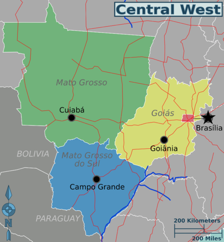

Central-West
The Central-West or Center-West Region of Brazil is composed of the states of Goiás, Mato Grosso and Mato Grosso do Sul; along with Distrito Federal (Federal District), where Brazil's national capital, Brasília, is situated. This Region is right in the heart of Brazil, representing 18.86% of the national territory. With the move of the country's federal capital from Rio de Janeiro to Brasília in the 1960s, the construction of roads and railways to the interior of the country made access to the region easier, speeding up population growth and contributing significantly to the region's development.
- Area: 1,612,007.2 km² (18.86%);
- Population: 13,357,154 (7.2 people/km²; 6.4%);
- GDP: R$279 billion / US$174,3 billion (2008; 8.3%);
- Climate: Savanna climate (hot, with little precipitation during winter in the northeast and the east; Tropical in the east and in the west; Equatorial in the north; Some temperate climate places in the south);
- States: Goiás, Mato Grosso, Mato Grosso do Sul, Distrito Federal (Federal District);
- Largest Cities: Brasília (national capital) (2,562,963); Goiânia (1,318,148); Campo Grande (796,252); Cuiabá (556,298); Aparecida de Goiânia (442,978); Anápolis (334,613);
- Economy: Livestock, Soybeans, tourism;
- Transport: Highways where they are present (mostly in the center and east regions); transport by rivers is common in the north and in the east; airplanes are used in remote and smaller communities;
- Vegetation: Mainly savanna-like vegetation, including the Pantanal (Chaco, in Paraguay), flooded areas in the west, equatorial rainforests in the north;
- Notable characteristics: With a low population density, most of the land in the region is used for grazing instead of agriculture. The region is also the least industrialized in the country, based mainly in food & meat processing.